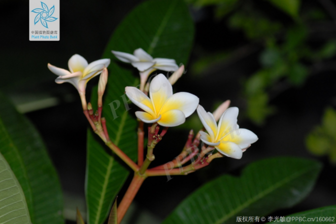

鸡蛋花
一、鸡蛋花的基本信息
中文名 鸡蛋花拉丁学名 Plumeria rubra 'Acutifolia'
科（拉丁名） 夹竹桃科（ Apocynaceae）
属（拉丁名） 鸡蛋花属（Plumeria L.）
别称 缅栀子、蛋黄花
二、形态特征
中国植物志
落叶小乔木，枝条粗壮，带肉质，树皮粗糙，伤口有白色乳汁
2.叶
叶轮生，有叶柄，叶厚纸质，长圆状倒披针形或长椭圆形，长20-40厘米，宽7-11厘米，顶端短渐尖，基部狭楔形，叶面深绿色，叶背浅绿色，两面无毛；中脉在叶面凹入，在叶背略凸起，侧脉两面扁平，每边30-40条，未达叶缘网结成边脉；叶柄长4-7.5厘米，上面基部具腺体，无毛。
3.花
图片来源：PPBC中国植物图像

鸡蛋花在园林植物中相当有辨识度，鸡蛋花通常有五个花瓣呈螺旋排列，开花时具有强烈的香气，花序为聚伞花序，花冠外面白色，花冠筒外面及裂片外面左边略带淡红色斑纹，花冠内面黄色，花期3到10月
三、速记口诀
夏有凉风送香来，花开里黄外边白，
肉质枝条叶轮生，五朵花瓣回旋排。
四、解说词
鸡蛋花是一种落叶乔木，可高约3-9米，花冠为5裂回旋排列，花瓣外部呈现乳白色，内部艳黄，与鸡蛋相似故得名为鸡蛋花。果实为黑褐色木质果实，呈椭圆形，果实成熟时会裂开露出扁平具翅的种子，当割切树干时会有白色乳液渗出，乳液有毒。花期为每年3-9月，而果期则在6-12月。
鸡蛋花因其香气和形态而极具观赏价值，现有数千种培育变种，花含芳香油，可熏制香茶，提取香精，制成高级化妆品、香皂和作食品添加剂。在夏威夷，鸡蛋花已经成为文化的一部分，被用来制作用于庆祝活动的花环和蕾丝项链。鸡蛋花也可以代茶，有去湿之效。是基里巴斯、尼加拉瓜和老挝的国花。
鸡蛋花一般被认为是热带植物，在温度较低时叶子脱落进入休眠状态，中国引入栽培有红鸡蛋花及鸡蛋花，福建、广东、广西及云南常见栽培。